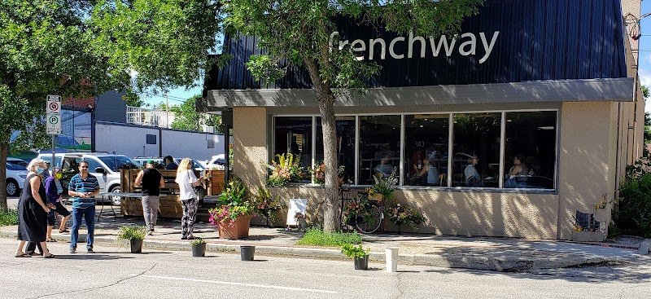

Best breakfast and brunch within walking distance of the Corydon Airbnb

You don't need a car for a good breakfast from the Corydon/Crescentwood Airbnb. Between coffee-and-pastry stops on Corydon Avenue itself and a sit-down French breakfast a couple of blocks off the strip, there's enough within an easy walk to cover a quiet solo morning or a slower weekend brunch.
Coffee and a pastry: Thom Bargen Coffee Roasters
Thom Bargen Coffee Roasters at 743 Corydon Ave is the easiest early-morning option on the strip, open from 7am on weekdays and 8am on weekends. It's a coffee roaster first (expect a proper espresso and filter-coffee menu) with pastries to go alongside. Good for a quick coffee-and-croissant start before a walk.
Smoothies and a lighter breakfast: The Mighty Kiwi
The Mighty Kiwi Juice Bar & Eatery at 709 Corydon Ave opens at 8am on weekdays (10am Saturdays, closed Sundays) with smoothies, fresh juices, and wraps, a good pick if you want something lighter or plant-based to start the day rather than a full sit-down plate.
A sit-down French breakfast: French Way Café
For an actual table-service breakfast, French Way Café at 238 Lilac St (a few minutes off Corydon Avenue itself) runs a hot breakfast menu from 8am to 3pm Tuesday through Saturday, and 9am to 3pm Sunday, with crepes, omelettes, and French toast alongside fresh-baked pastries and bread. It's the closest thing to a proper sit-down brunch within walking distance.
A reliable bakery-café: Stella's
Stella's Café & Bakery has a Corydon-area location and is a dependable, familiar option if you know the chain from elsewhere in the city, eggs, hashes, sandwiches, and bakery items, with early opening hours most days. Check their locations page for the current Corydon address and hours before you head out, since Stella's runs several Winnipeg locations and details can vary by branch.
For something sweet, later in the morning: Sugar + Salt Bakeshoppe
Sugar + Salt Bakeshoppe at 897 Corydon Ave is worth planning around rather than dropping into at 7am; it opens at 11am on weekdays and 10am on Saturdays, and is closed Sunday and Monday. If your morning runs later, it's a good stop for cupcakes, cookies, and daily-changing bakes on the walk back.
Good to know: Hours for small independent cafés can shift with the season and staffing, so it's worth a quick check of the business's own site or social page the morning of, especially for French Way Café and Sugar + Salt Bakeshoppe, which keep more limited days than the coffee shops on the strip.